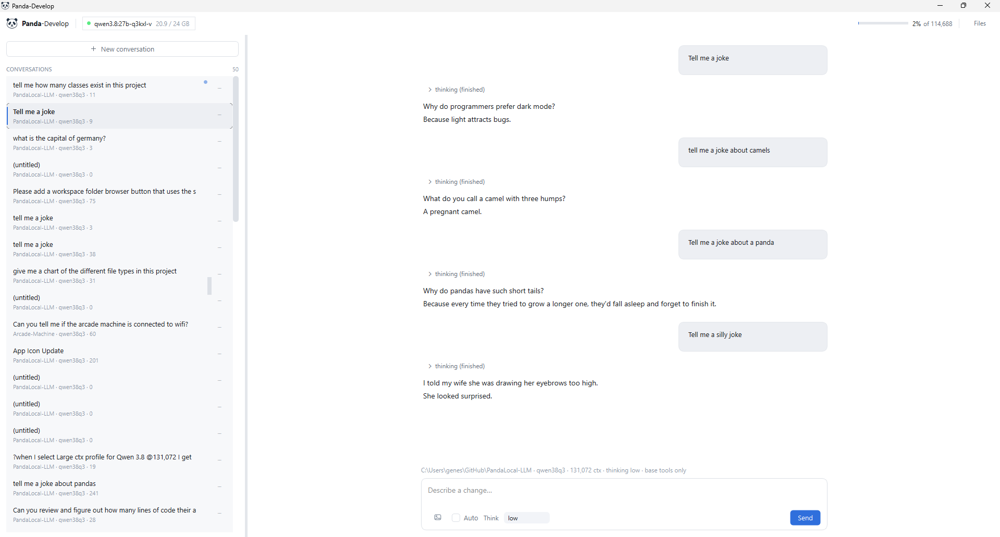
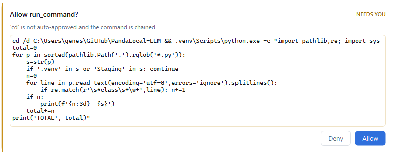
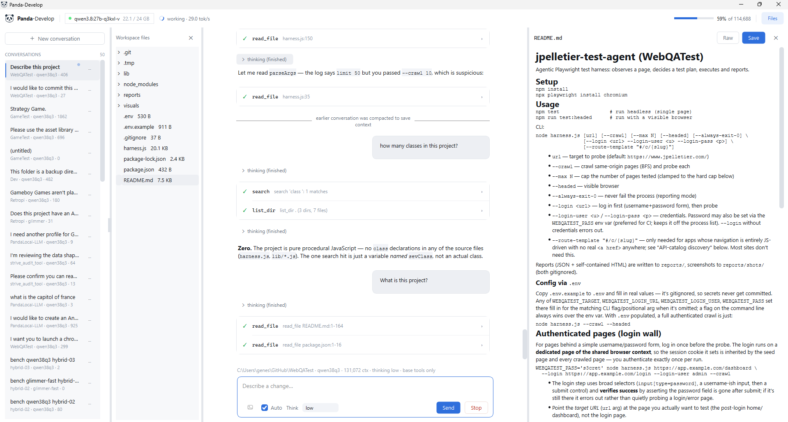
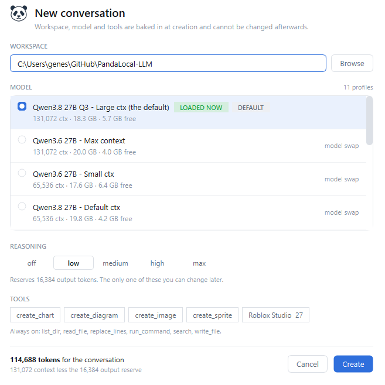
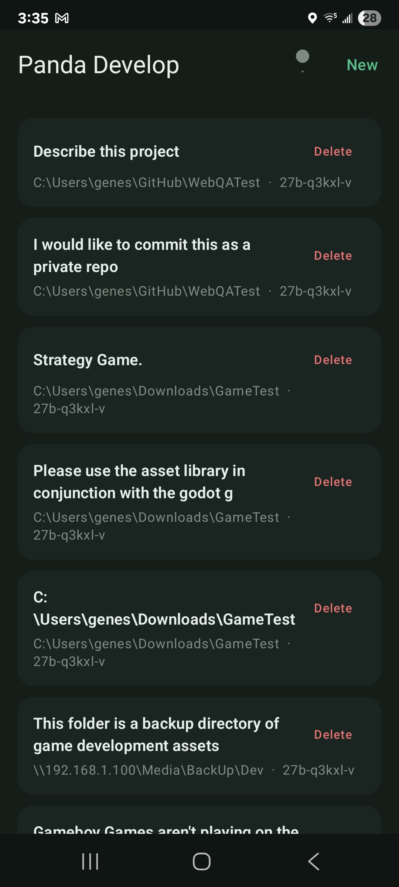

Panda-Develop is my in-house coding agent front end and local-LLM arbiter in one. It is a FastAPI daemon on 127.0.0.1 with two faces: a system tray icon that owns the GPU, and a native Qt desktop client. The rest of this post is a tour of what it does and why each piece exists.
Why Build Your Own?
I built this because I am annoyed by the agentic coding front ends currently available to me. Either I don’t like the interface, or, worse, it doesn’t support something I need.
The issue I hit consistently is memory management when running local models on my primary machine. I use this box for work and for gaming, so it has a very strong graphics card with a lot of video memory, which makes it ideal for local models. The problem is that tools like Ollama and LM Studio don’t give you enough control over loading and unloading without extra manual steps.
My tool fuses the two halves: a chat front end, and a tray service that manages the communication with Ollama and ComfyUI. What the pairing buys is one component that knows what is allowed to hold the card, which means it can hand a conversation as much context as the machine can currently spare instead of a number I picked once and forgot.
The other half of the motivation is that third-party plugins are built for frontier cloud models and degrade badly on local ones. Each of those failure modes turned into a design decision:
| What breaks on a local model | What I did instead |
|---|---|
| Multi-thousand-token system prompts eat the usable context | Short system prompt, measured context budget |
| 20+ tools → selection errors and schema bloat | Six base tools; everything else opted into per conversation |
| Fuzzy search/replace blocks local models emit incorrectly | Whole-file write plus line-anchored replace, validated with retry |
| Silent context overflow, then degradation into nonsense | Explicit compaction, marked in the transcript |
| No awareness of VRAM; happily OOMs the box | VRAM arbitration is a first-class feature |
| Model load/unload is someone else’s problem | It is this tool’s core job |
Provisioning, Not Just Loading
Loading a local model is normally presented as a one-click affair. Pick a model, it loads, off you go. On a card that is also running your desktop, it is a provisioning decision. The more memory you give to the model, the less you have to actually run your machine and the software you are building. I had to create an algorithm for the tool to use to ensure it doesn't brick the machine.
Qwen3.8 27B, weights 17.36 GB
KV cache, per 8,192 tokens + 0.30 GB
desktop and browser, in use ~ 2.00 GB
headroom floor, reserved + 1.50 GB
on a 24 GB cardImage generation sharpens all this, though it isn’t the only reason any of it exists. ComfyUI wants around 10 GB and the coding model wants 17 to 20, so the two are declared conflicting, and declared conflicts are checked before free space. A freshly started ComfyUI is only sitting on about 0.2 GB, so there looks to be plenty of room right up until the first image generation takes the card out from under everything. When something is in the way, the daemon says so and asks rather than auto-killing:
Loading this model needs 19.6 GB of VRAM.
ComfyUI (image gen) (~10.0 GB) is holding the GPU and cannot run at the same time.
Stop it and continue?
The tray icon answers the resulting question without my clicking anything: what is holding the card right now? It stamps a letter per resident service and uses colour as the modifier.
| Icon | Meaning |
|---|---|
| faint grey ring | nothing resident, the card is free |
| L green | an LLM is resident |
| C blue | ComfyUI (image gen) is up |
| LC purple | both, contended |
| L / C amber | starting, stopping, or loading |
| L red | resident but spilled to CPU (~37% slower) |
| ? grey | cannot reach the daemon |
The tray menu is a flat list of profiles. A profile is a named model-plus-settings combination, so “same model, bigger context” is another one-click entry rather than a nested menu.
A Tour
The front end is conversation-first. Every session is stored in SQLite, so the thread and its entire tool-call history survive a restart, a crash, or a week off. The sidebar is the list of them, each pinned to a workspace root.

A turn streams over SSE: text as it arrives, tool calls as collapsible cards, approval prompts inline. Reads run freely. Edits, MCP calls and unrecognised shell commands stop and ask, showing the exact proposed change first. Safe read-only commands (git status, pytest) are auto-approved by prefix. A config-driven deny list goes the other way: shutdown, diskpart, reg delete, rm -rf /, git push --force, pip install are refused outright, cannot be approved, and beat session-wide auto-approve. They are matched as substrings rather than prefixes, so a chained cd x && shutdown /s can’t smuggle one past. This runs on my daily driver with a shell tool in the list; that had to be built in from the start rather than retrofitted.

cd isn’t on the auto-approved list, and because the command is chained no prefix check applies to the rest of it anyway.The file browser is a lazily-expanding tree of the session’s workspace, and it isn’t decorative. It is how I check the agent’s work without alt-tabbing to an editor. Markdown opens rendered, with a Raw toggle when I want to fix a line myself, and every other text file opens straight into an editable pane with its own Save button, so a quick fix never needs a trip outside the tool. Images render inline, and anything else says plainly that it’s binary and can’t be previewed.

Starting a new conversation is where the design shows. Four choices, and the dialog states plainly that three of them are permanent:
- Workspace. The root every file tool resolves against, with path traversal rejected. A guardrail, not a sandbox:
run_commandis a real shell, so the agent can reach anything I could. - Profile. Local Qwen3.8/3.6/Coder builds plus Muse Glimmer, and Deepseek v4 Flash as a cloud option that bypasses the arbiter entirely. The picker is arbiter-aware: every entry shows its cost and what it would leave free.
- Tools. Six core tools are always present; everything else (charts, diagrams, image generation, MCP servers) is opted in per conversation and fixed at creation.
- Reasoning effort isn’t fixed at creation; the Think dropdown changes it anytime. Each model exposes what it supports, and each level reserves real context, from 16,384 tokens at
lowup to 122,880 atmax.

The Numbers on the Screen
Three readouts, because all three are things I used to guess at.
tok/s, measured live. Includes network time on cloud profiles, and it’s the fastest way to notice a model has spilled to CPU.
The context budget meter, top right of the first screenshot, fills toward compaction at 80% of the real, reserve-adjusted token count: 114,688 here, not the profile’s raw 131,072.
Compaction, marked in the transcript. Crossing the line triggers a summary with a visible marker, so “the model got dumber” becomes “the model compacted here.” Cloud profiles carry a running cost estimate in the same footer.
The desktop client isn’t the only way in. A companion mobile app talks to the same daemon, so a thread I started at my desk is right there to pick back up from my phone.

Where It Stands
I now have a coding tool with a UX that works exactly the way I like it. I no longer max my Claude subscription every single week because my local models are capable of handling so much work.
The same machine that couldn’t run a useful coding agent locally in April 2025 now runs one that beats what I was paying for then.